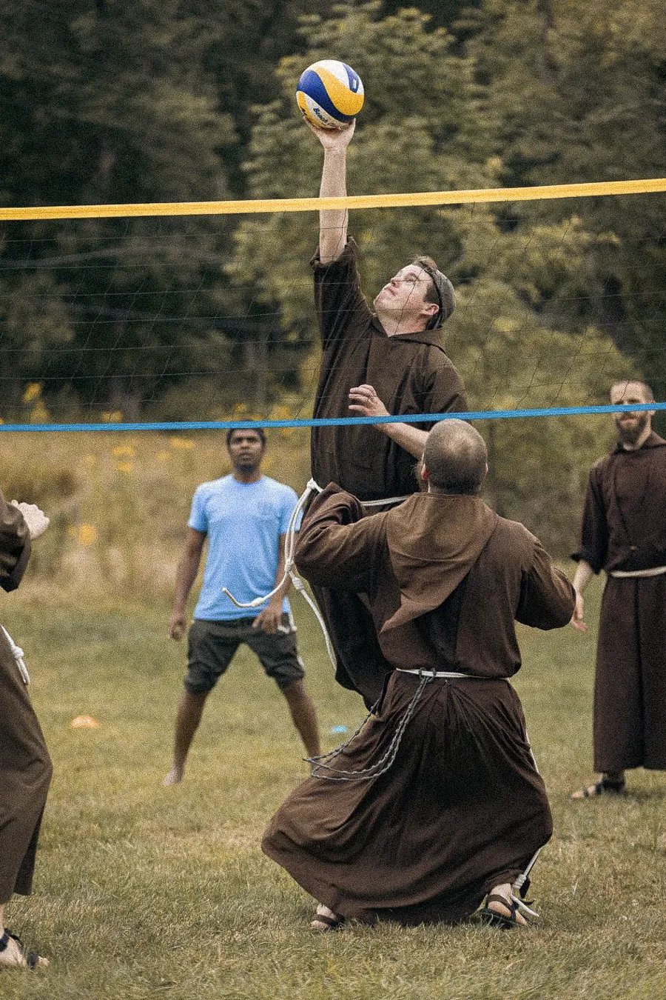
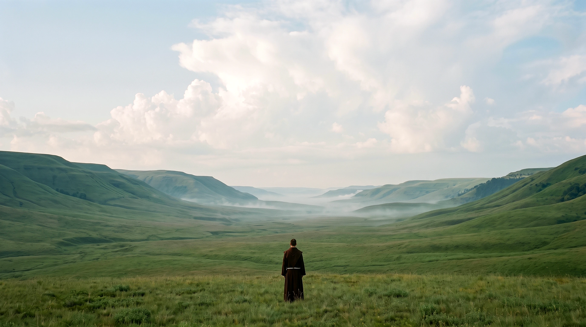
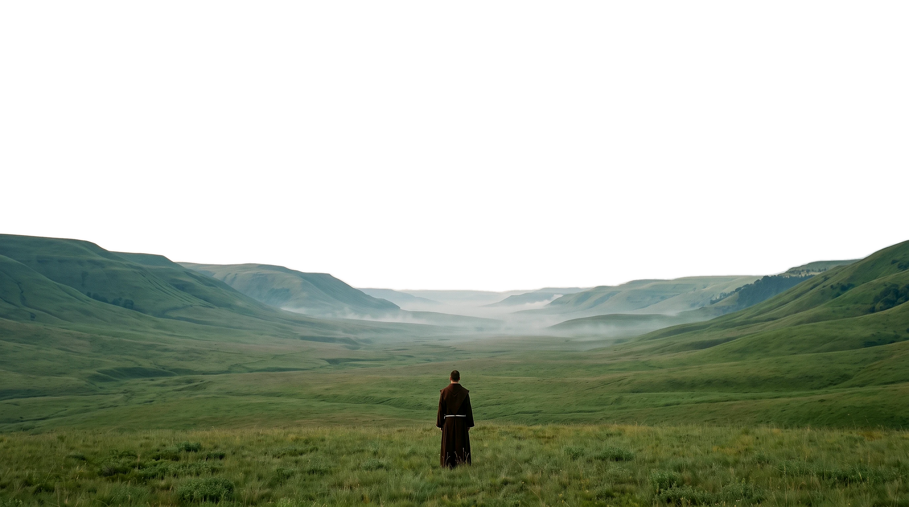
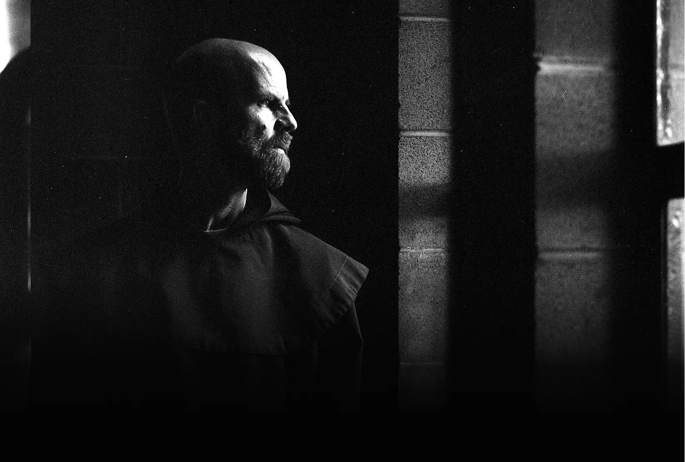
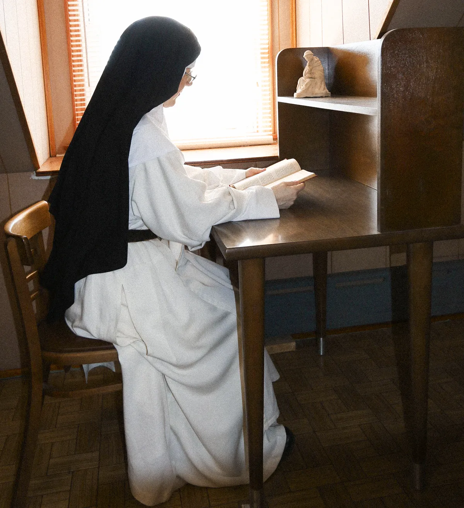
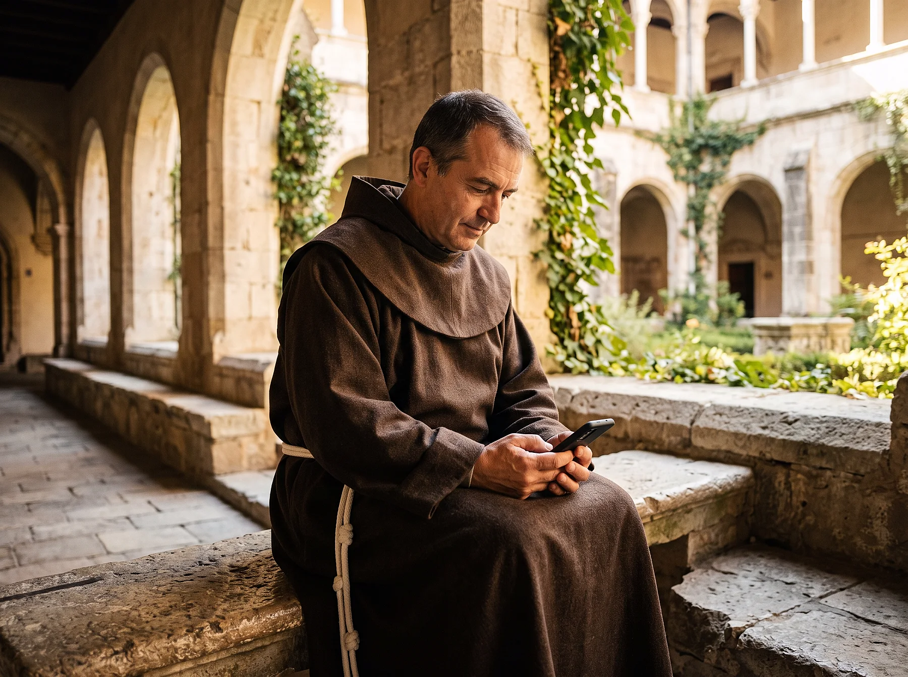
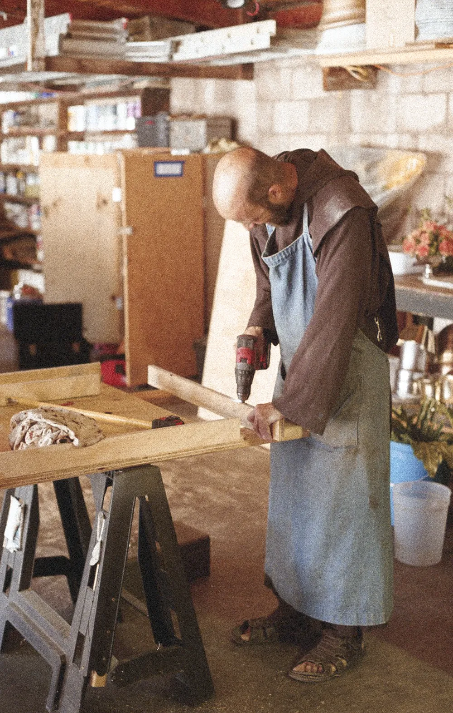
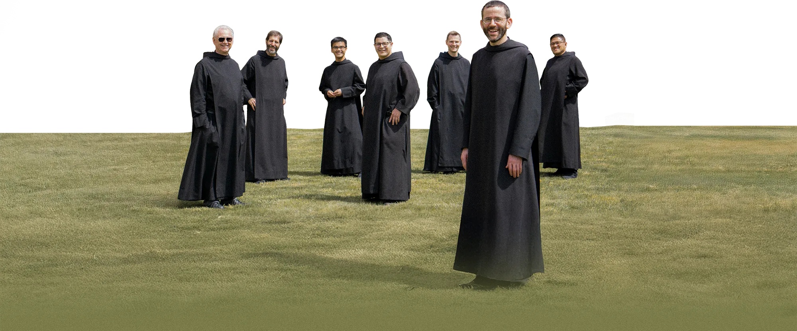
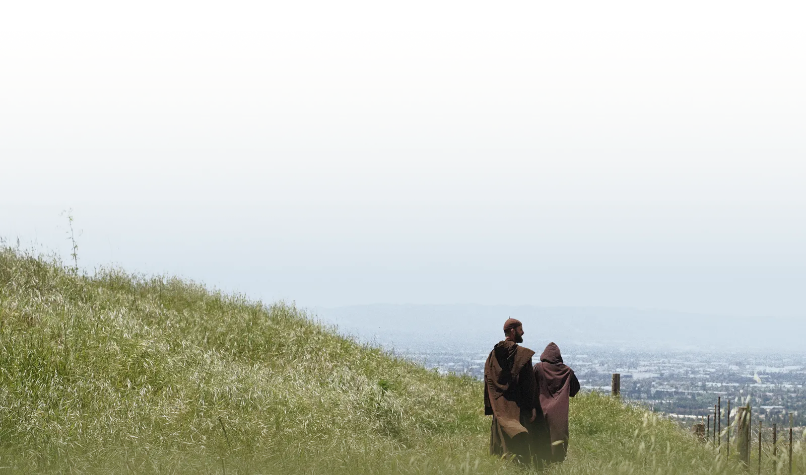

Peace & Productivity
Transform your life through ancient wisdom from monks & nuns.

The Monk Mindset App doesn’t just block your phone. It rebuilds your day with the sacred rhythms monks use for deep focus, meaningful work, and real rest.
01 / 04
01Build your own
Build your own
Monk Schedule
Add specific blocks for prayer & meditation, work, community, and wellness. As you’re challenged to live a well-ordered life.
02Customize automatic
Customize automatic
screen blocking
Achieve focus & freedom through customizable & seamless app-blocking. Save time, cut distractions and anchor yourself in the present.
03Track your
Track your
progress
Track your streaks and be challenged to live more and scroll less. Built-in data analytics.
04Learn how to live
Learn how to live
like a monk
Develop a Monk Mindset through carefully curated content. Apply the Monk Mindset principles in all aspects of your life.
We feel behind, struggle to focus, and scroll endlessly.
We yearn for peace but it feels out of reach.

For thousands of years, monks have mastered what we’re all searching for: how to find calm in chaos, focus deeply, and live with purpose.

Millionslearn and live monastic principles dailyWhat we doMedia & Tech

Tech
The Monk Mindset App helps you build your own monastic schedule, stay focused, and track your growth.
Try AppMonk Mindset is based on the7 Principles of Monastic Wisdom
Principles for Daily Life
Show Up & Receive the Light
Commit to Healthy Community
Refresh without Indulging

Be More Human at Work
Principles for Transformation

Choose Love

Seek Nothing to Find Everything
Discern Carefully, Commit Confidently
Community Impact
“Monk Mindset profoundly enhanced my spiritual journey, enabling me to deepen my prayer life and forge a stronger, more meaningful relationship with the Lord.”
Spencer
“Monk Mindset takes classical teachings and unites them with intentional steps, turning your mundane habitual lifestyle into an extraordinary life.”
Tara
“Monk Mindset is a masterclass for real people who want to grow in knowing, loving, and serving God.”
Sarah